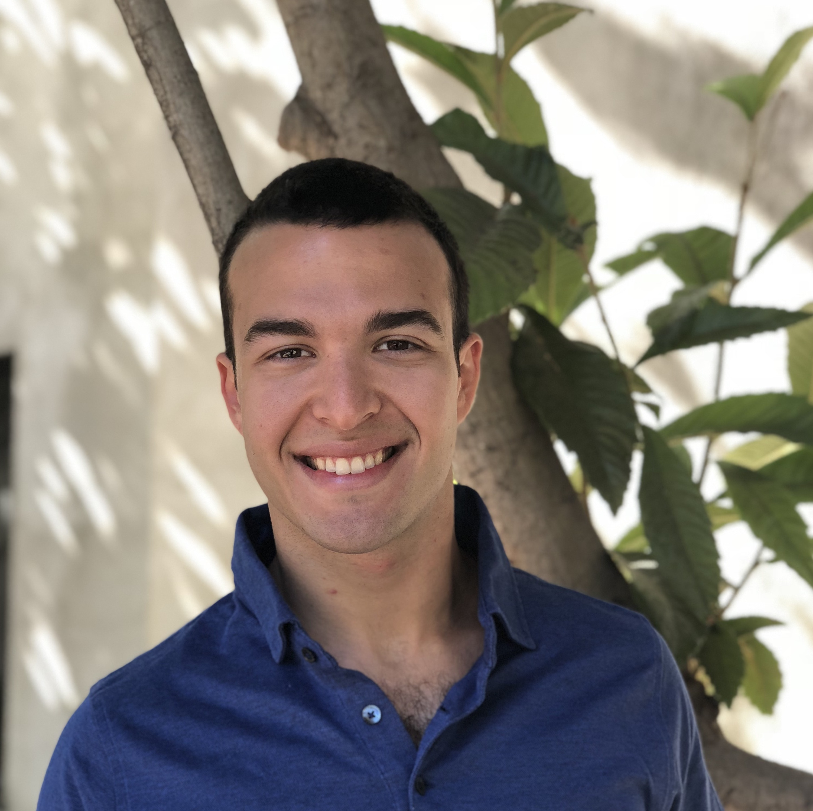

<div class="Content">
  <div class="two-column">
    
    <div class="bio">
      <p>
        Hello I'm Bora. Welcome to my website.
      </p>
      <p>
        I'm currently Director of Product for <a href="https://www.viaduct.ai/for-manufacturing" target="_blank">Viaduct Manufacturing</a>, a software solution to help manufacturing improve productivity and throughput.  
        I received my M.S. in Computer Science in March 2020 and my B.S. in Mathematics in June 2019, both from Stanford University. My CV is available <a href="assets/Bora_resume_May_2025.pdf">here</a>.
      </p>
      <p>
        I also paint. You can see my recent work <a href="https://www.instagram.com/borauyumazturk/?hl=en">here</a>. My email is bora.uyumazturk@gmail.com.
      </p>
    </div>
  </div>
